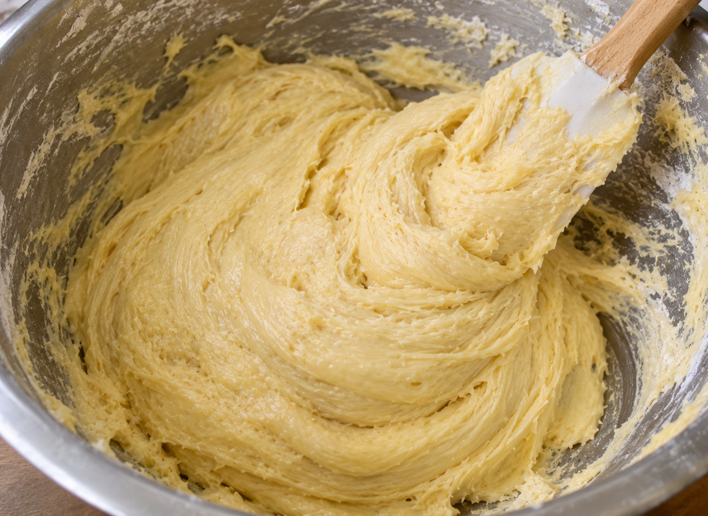
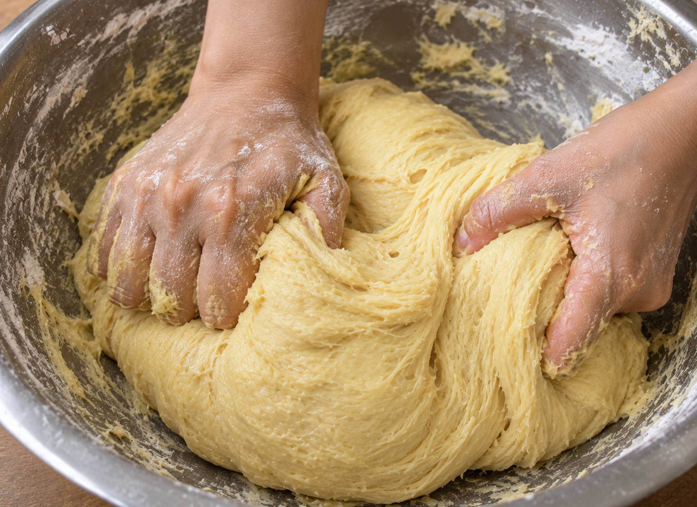

Langkah-langkah
-
Campur semua bahan roti jadi satu

-
Uleni sampai kalis (aku pake tangan) jangan takut jika adonan lengket ya, lumuri tangan sesekali dg tepung (tapi jangan menambahkan tepung) uleni terus sampai adonan kalis.

-
Kalisnya adonan canai tidak sekalis adonan roti ya, kira2 seperti ini sudah cukup.